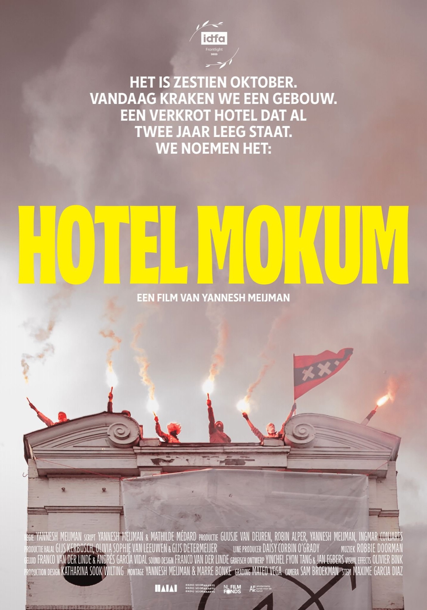
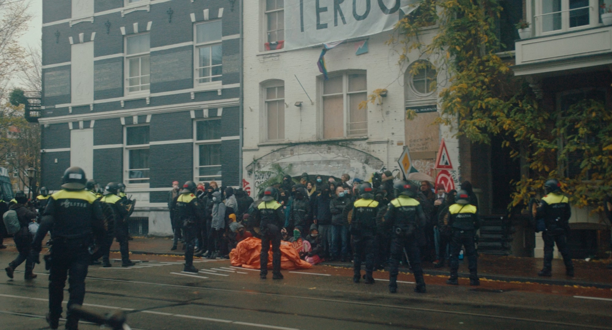
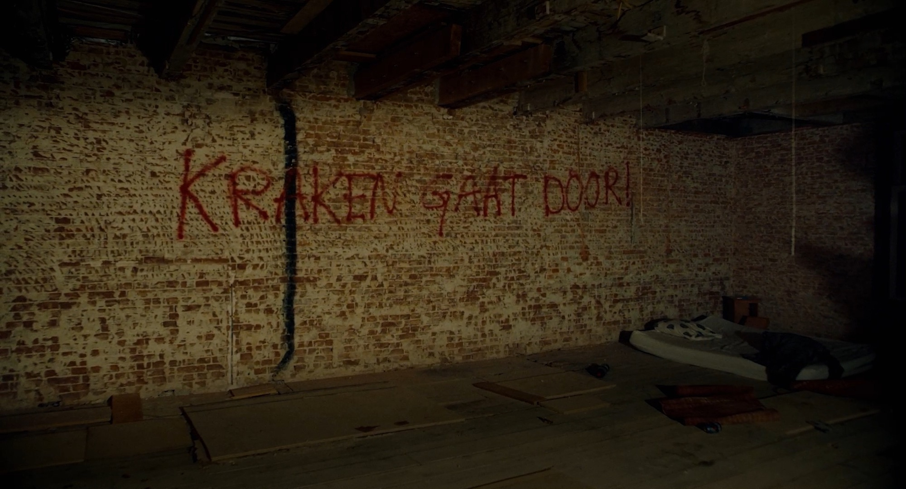
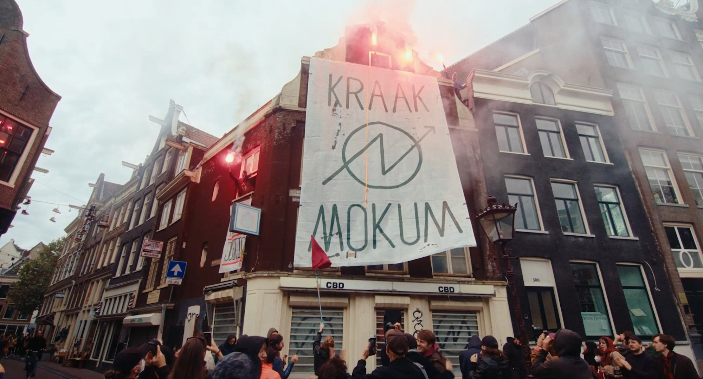

Hotel Mokum is a short documentary about a collective that squatted the abandoned Hotel Marnix in the heart of Amsterdam on October 16th, 2021. Over six weeks the collective transformed the hotel into a home, a self-proclaimed free space and an oasis in a city smothered by hypergentrification. At the height of its popularity, Hotel Mokum got evicted under the guise of fire safety. The story of Hotel Mokum is rooted in protest against the housing crisis and the criminalization of squatting that led to the eviction of over 300 squats in Amsterdam alone. The film combines documentary footage, archival materials, and constructed scenes to create a complex and intimate portrait of a hopeful collective and the city they are working to reclaim.
Hotel Mokum had its world premiere at IDFA 2023. The film had a short release in the Dutch cinemas, distributed by Gusto Entertainment. Hotel Mokum is currently shown on Amazon Prime.
→Trailer
→Full film on Amazon Prime.

ScreeningS
2025
Out of Space Festival, Belgium.
Eye Filmmuseum, NL.
Antifa Filmfest, U.S.
2024
Architecture Film Festival Rotterdam, NL.
Architekture Filmtage, Switzerland.
de Uitkijk, NL.
Filmtheater Hilversum, NL.
Paradiso, NL.
de Schuur, NL.
Slim radio, NL.
Palestinian Film Festival Amsterdam, OT301, NL.
Boomsspijker, NL. Post-office, NL.
FC Hyena, NL.
Lux, NL.
Kriterion, NL.
Studio /K, NL.
Lab-1, NL.
De Appel, NL.
VRIJland OCCII, NL.
Cinetol, NL.
NieuwLand, NL.
Melkweg, NL.
Landbouwbelang, NL.
2023
Internationaal Documentaire Festival Amsterdam, NL.
Waterskaap, NL.
Takland, NL.
Joe’s Garage, NL.
Kriterion Kraakt, NL.
ACU, NL.
De Synagoge, NL.
Kraaiennest, NL.
Café Benelux, NL.

PresS
2024
De Correspondent about Hotel Mokum (NL).
AT5 about Hotel Mokum (NL).
Spraakmakers about Hotel Mokum (NL).
De Nacht van de Woonstrijd about Hotel Mokum (NL).
Amsterdammerschap about Hotel Mokum (NL).
Het Parool about Hotel Mokum (NL).
On Documentary about Hotel Mokum (EN).
SeeNL about Hotel Mokum (EN).
Credits
Written, directed, edited by Yannesh Meijman
Co-writer Mathilde Médard
produced by 100% & Radio Voorwaarts
D.O.P. Sam Broekman
Voice Maxime Garcia Diaz
Producer Robin Alper
Producer Guusje van Deuren
Producer Gijs Kerbosch
Producer Yannesh Meijman
Line Producer Daisy Corbin O’Grady
Production Manager Levi Defares
1st AD Huib Robben
1st AD Mathilde Médard
1st AD Ahmad Zaghmouri
Assistant Director Mateo Vega
Assistant Director Lucas Huikeshoven
Production Design Katharina Sook Wilting
Assistant Art Director Tal G
Sound Recording Andrés García Vidal
Sound Recording Franco Van Der Linde
Original score Robbie Doorman
Additional score Jonathan Castro Alejos
Sound Design Franco Van Der Linde
Mixage Tim Marsman
Co-editor Marre Bonke
Visual Effects Olivier Bink
Grading Mateo Vega
Archive Lev Björn Dasha Juji Mona Neo Jantje
Title Design Yinchel Fyon Tang
Poster Design Jan Egbers
Photo for poster Eli Prehn
With music from Jan Modaal, Sophie Straat & Danny de Munk

Dancer Neda Ruzheva
Caller 1 Lex
Caller 2 Charlie
Caller 3 Menno
Caller 4 Jantje
Caller 5 Donyel
Barricader 1 Lana
Barricader 2 Björn
Barricader 3 Bob
Barricader 4 Leev
Written Excerpt by Timon Taminga
Sound Recording Hannah Veldhoen
Sound Recording Robbie Doorman
Sound Recording Ada Reinthal
Sound Recording Koos van der Vaart
Additional Camera Sara Elzinga
Additional Camera Myrthe Verweij
Additio Floris Schäfer
Additional Camera Jilles van Kleef Additional Camera Dasha
First AC Thijs van Geenhuizen
First AC Ruben van Barneveld
Visual Effects Consultancy Tharim Cornelisse
Post Producer Daan Janssen
Post Producer Debora Adema
Production Assistant Tycho Meertens
Production Assistant Rinke van der Veen
Production Assistant Sam Vroom
Production Assistant Rosita Safakisch
Production Assistant Zoë van der Meer
Thanks to those who shared their archive with us.
Special thanks to those who made Hotel Mokum possible.

This film was made possible with support from Het Filmfonds, Het Amsterdams Fonds voor de Kunst, Stichting Oscar Maarsman, Medialab, Light unit, Cam Unit, Aga Aga, and FeverFilm.